Hmm, har segat lite med att
lägga upp bilderna i år av flera anledningar, först och främst
för att jag var ute
och reste veckan efter Dreamhack. För det andra för att jag är
lat.. :)
Dock har jag fått vissa små antydningar till att jag borde ta
och göra det, så nu gör jag det äntligen.. :P
Har tyvärr inte tagit så många bilder som jag brukar, så
ni får hålla tillgodo med dessa tills jag kommer tillbaka
från MI-Lan 2003, om jag nu ens lyckas ta mig dig med min för tunga
dator :P
| 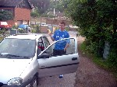 Klockan är 6.00 och wiz står laddad med en banan utanför mitt hus |
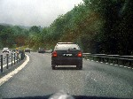 LUL? :( |
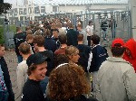 Kön var lika rolig som sist |
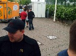 En uppenbart misslyckad bild där jag faktiskt siktade på kön med |
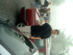 Arild + bullar = sant |
| 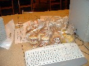 Har man ingen skärm så får de duga med bullar |
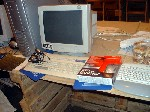 Smart som jag är glömde jag musen hemma, så det blev till att köpa en ny |
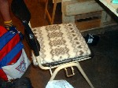 Wiz's sittkudde |
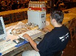 Arild sitter och spelar lite i väntan på skärmen |
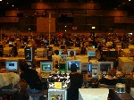 Översiktsbild |
| 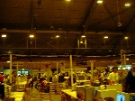 Som vanligt |
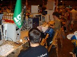 EraZeR har anlänt, LOTTO flaggan hittade han nånstans :P |
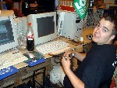 Arild har äntligen, efter 6 timmars väntande fått en skärm (Zonics) |
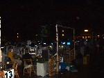 Lite mörker igen |
Elmia från utsidan :p |
| 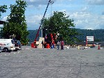 Läskbacksklättring, bra timing på avtryckningen där :P |
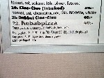 Extra på lägg :) |
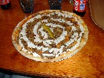 Kebabpizza |
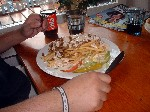 Kebabtallrik |
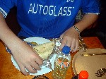 Kebabrulle |
| 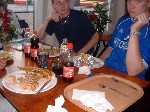 Försökte ta en bild över bordet men orkade inte ställa mig upp så det blev som det blev.. |
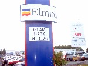 .. |
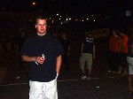 För er som inte vet brukar Arild bli kallad "dansken" av Zonic :P |
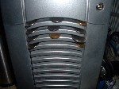 Mina växelpengar, gömde dom där även när jag sov :P |
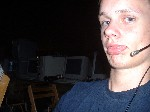 :P |
| 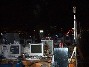 Översikt |
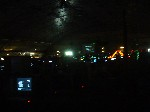 Igen |
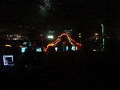 Och igen |
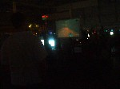 En bild utan blixt på q3 matchen som repus nissarna hade fixat på projektor :) |
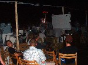 En bild med blixt på publiken :P |
Så var ytterligare
ett Dreamhack slut, trots strul med internet och brist på sovplatser så
var det kul, så vi dyker nog upp på
Dreamhack 2003 Winter med, se till att ta er dit nu och representa AQ2 :P
{kind=link}
{kind=link}
{kind=link}
{kind=link}
{kind=link}
{kind=link}
{kind=link}
{kind=link}
{kind=link}
{kind=link}
{kind=link}
{kind=link}
{kind=link}
{kind=link}
{kind=link}
{kind=link}
{kind=link}
{kind=link}
{kind=link}
{kind=link}
{kind=link}
{kind=link}
{kind=link}
{kind=link}
{kind=link}
{kind=link}
{kind=link}
{kind=link}
{kind=link}
{kind=link}